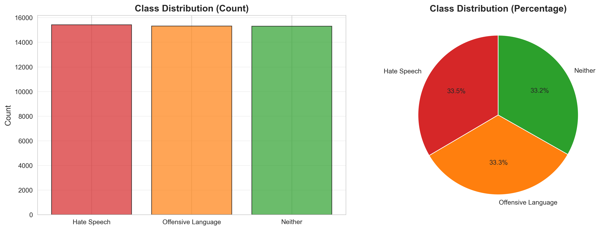
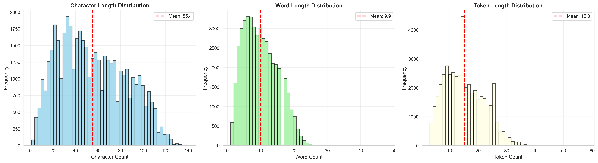
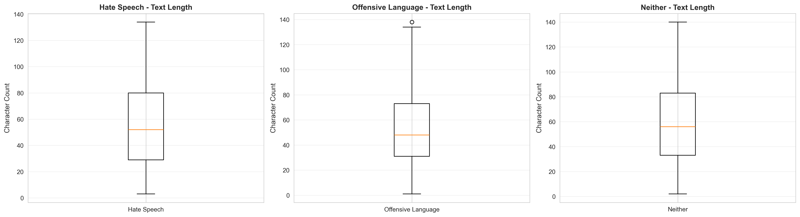
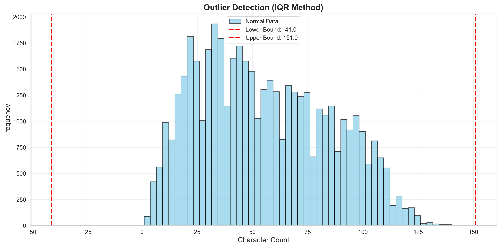

📊 Hate Comment Detection - Statistical Analysis Report
Dataset: data/processed/train.csv
Generated: 2025-12-11 19:03:40
1. Dataset Overview
2. Class Distribution
| Class |
Label |
Count |
Percentage |
| Hate Speech |
0 |
15,417 |
33.49% |
| Offensive Language |
1 |
15,319 |
33.28% |
| Neither |
2 |
15,300 |
33.23% |

3. Text Length Statistics
| Metric |
Characters |
Words |
| Mean |
55.39 |
9.86 |
| Std Dev |
29.46 |
5.13 |
| Min |
1 |
1 |
| Max |
140 |
48 |


4. Token Statistics
| Metric |
Value |
| Mean Tokens |
15.28 |
| Std Dev |
6.94 |
| Min Tokens |
N/A |
| Max Tokens |
N/A |
5. Outlier Detection
✓ Dataset is clean with minimal outliers

6. Summary & Recommendations
✓ Data Quality: Dataset is well-balanced and cleaned. Text lengths are reasonable for BERT-based models (max 128 tokens).
✓ Class Balance: All three classes have equal representation after preprocessing (oversampling applied).
✓ Model Readiness: Data is ready for training. No significant anomalies detected.